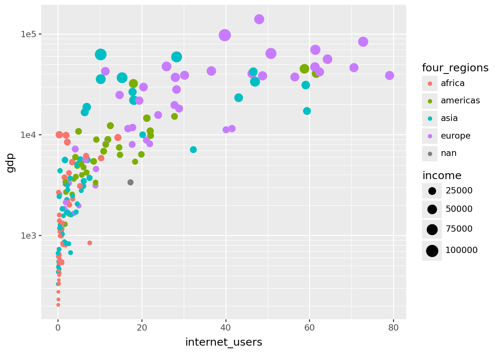
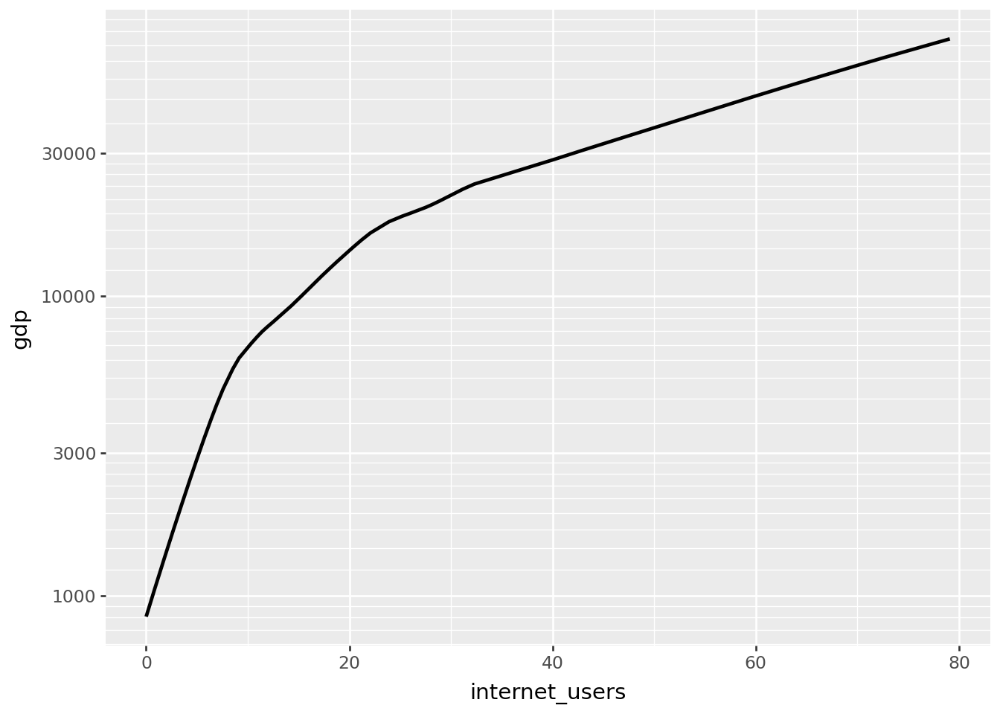
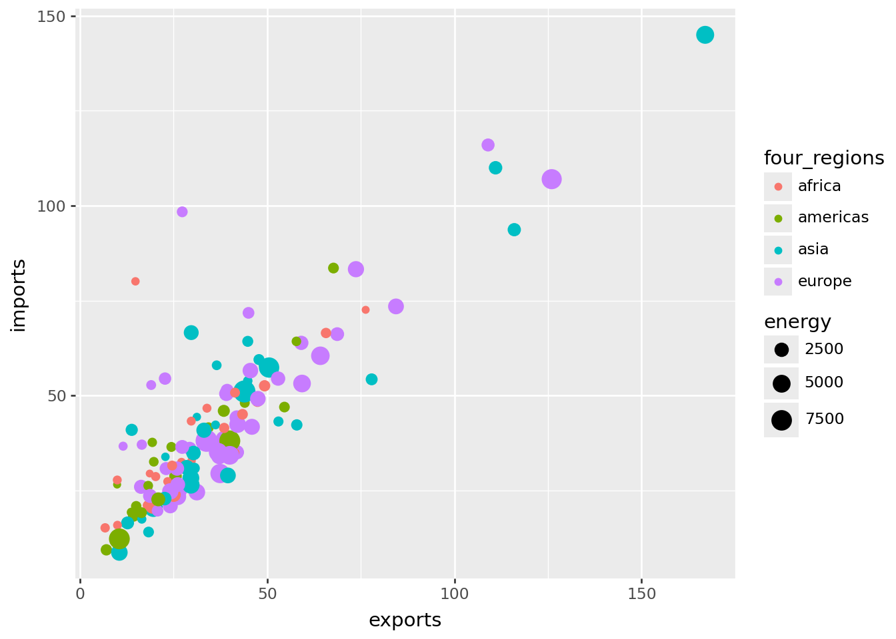
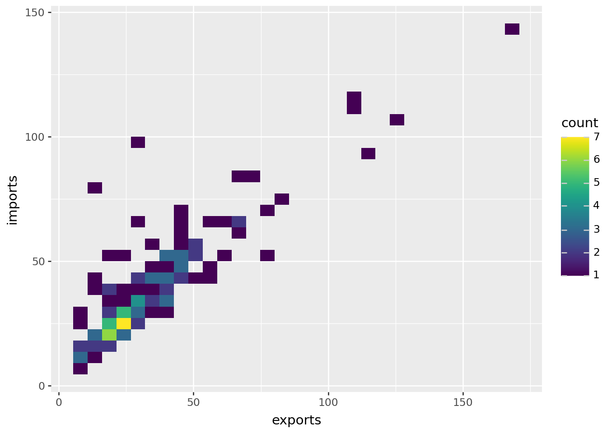
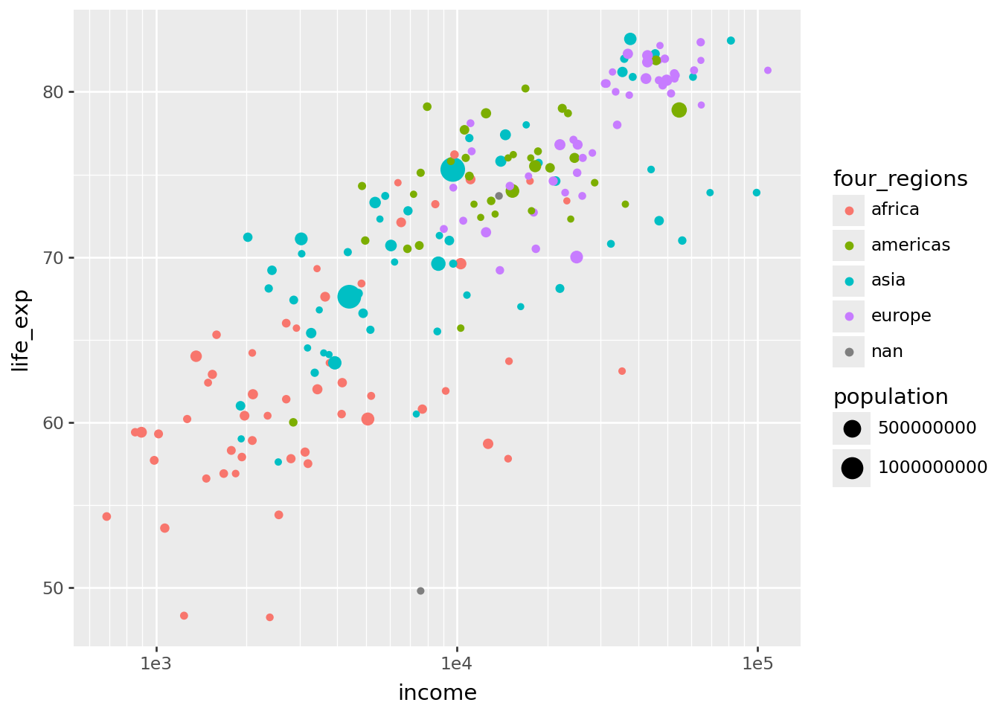
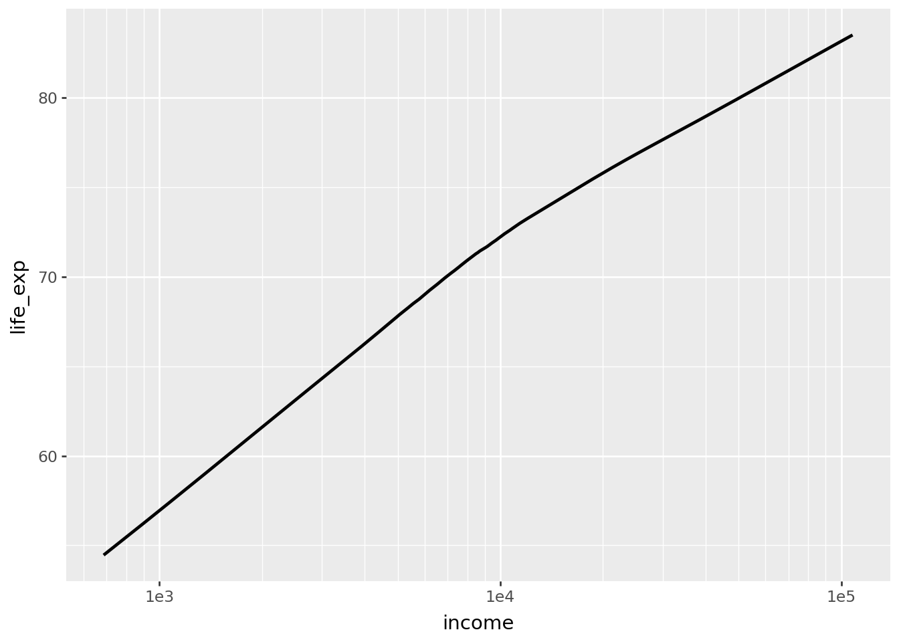

import pandas as pd
from plotnine import ggplot, aes, geom_point, geom_smooth, geom_bin2d, scale_x_log10, scale_y_log10
q1 = pd.read_csv("q1data.csv")
q2 = pd.read_csv("q2data.csv")
q3 = pd.read_csv("q3data.csv")Lab 1 — Gapminder
Task 1
Aesthetics used (what maps to what):
- x = internet_users
- y = gdp
- color = four_regions
- size = income
t1 = q3[q3["year"] == 2001]
p1 = ggplot(t1, aes("internet_users","gdp", color="four_regions", size="income")) + geom_point() + scale_y_log10()
p1C:\Users\ishti\OneDrive\Documentos\MSBA_CP\544\Lab 1\.venv311\Lib\site-packages\plotnine\layer.py:372: PlotnineWarning: geom_point : Removed 32 rows containing missing values.
Another geometry (quick note):
- geom_smooth: good to show overall trend; bad because it hides country-level dots.
p1_alt = ggplot(t1, aes("internet_users","gdp")) + geom_smooth() + scale_y_log10()
p1_altC:\Users\ishti\OneDrive\Documentos\MSBA_CP\544\Lab 1\.venv311\Lib\site-packages\plotnine\stats\smoothers.py:345: PlotnineWarning: Confidence intervals are not yet implemented for lowess smoothings.
Task 2
Aesthetics used:
- x = exports
- y = imports
- color = four_regions
- size = energy
t2 = q2.query("year == 1997").copy()
for c in ["exports", "imports", "energy"]:
t2[c] = pd.to_numeric(t2[c], errors="coerce")
t2 = t2.dropna(subset=["exports", "imports", "energy", "four_regions"])
print("t2 rows after cleaning:", len(t2))
p2 = ggplot(t2, aes("exports","imports", color="four_regions", size="energy")) + geom_point()
p2t2 rows after cleaning: 125
Another geometry (quick note):
- geom_bin2d: good for where many points pile up; bad because you lose per-country bubbles.
p2_alt = ggplot(t2, aes("exports","imports")) + geom_bin2d()
p2_alt
Task 3
Aesthetics used:
- x = income (log)
- y = life_exp
- color = four_regions
- size = population
t3 = q1[q1["year"] == 2010]
p3 = ggplot(t3, aes("income","life_exp", color="four_regions", size="population")) + geom_point() + scale_x_log10()
p3C:\Users\ishti\OneDrive\Documentos\MSBA_CP\544\Lab 1\.venv311\Lib\site-packages\plotnine\layer.py:372: PlotnineWarning: geom_point : Removed 4 rows containing missing values.
Another geometry (quick note):
- geom_smooth: good for the rising curve; bad since outliers/countries get hidden.
p3_alt = ggplot(t3, aes("income","life_exp")) + geom_smooth() + scale_x_log10()
p3_altC:\Users\ishti\OneDrive\Documentos\MSBA_CP\544\Lab 1\.venv311\Lib\site-packages\plotnine\stats\smoothers.py:345: PlotnineWarning: Confidence intervals are not yet implemented for lowess smoothings.